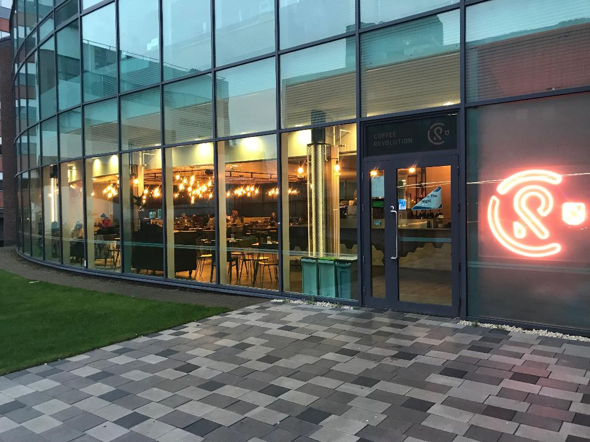

FOOD
When it comes to food there are a lot of cheap and really good places you could choose from in the Student's Union. Among the local eateries, you could visit Interval, Bar One or Caffe Revolution if you're looking for some great atmosphere while taking lunch. You could go to Grill and Go if you're in a hurry and searching for a fast food place or to New Leaf if you're looking for some healthy salads. Last but not least, Our Store, the local groceries shop, is always there for you with the £3.5 meal deal for a sandwich, a snack, and a drink.
Find Sheffield's Student Union on social media!